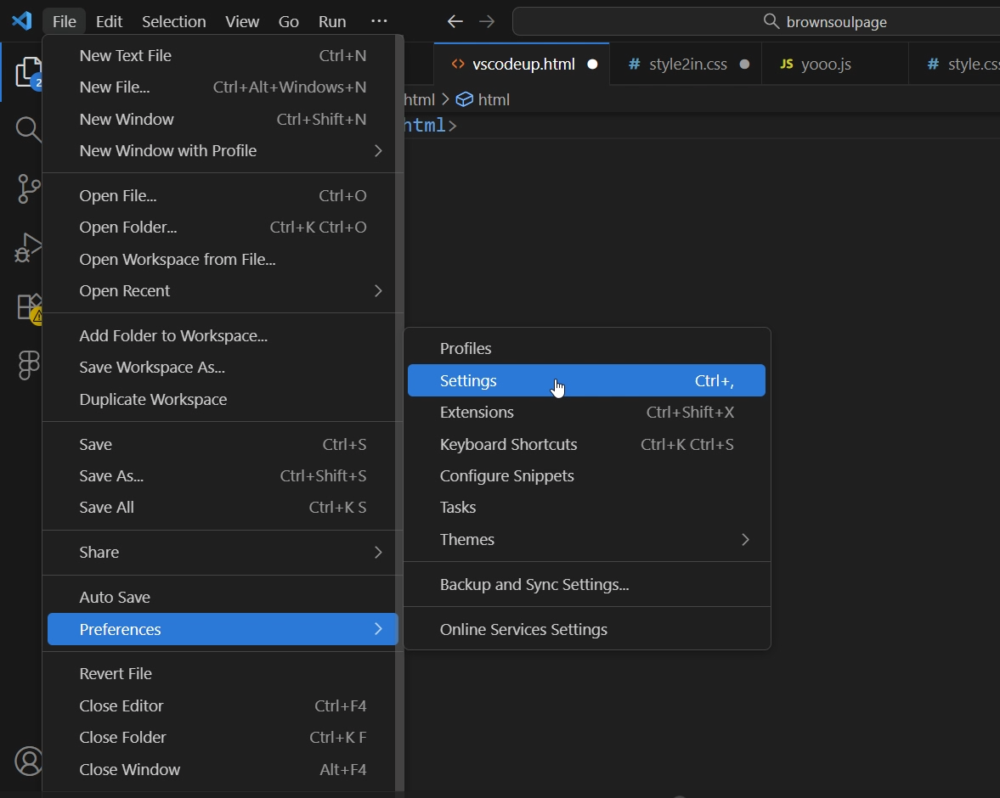
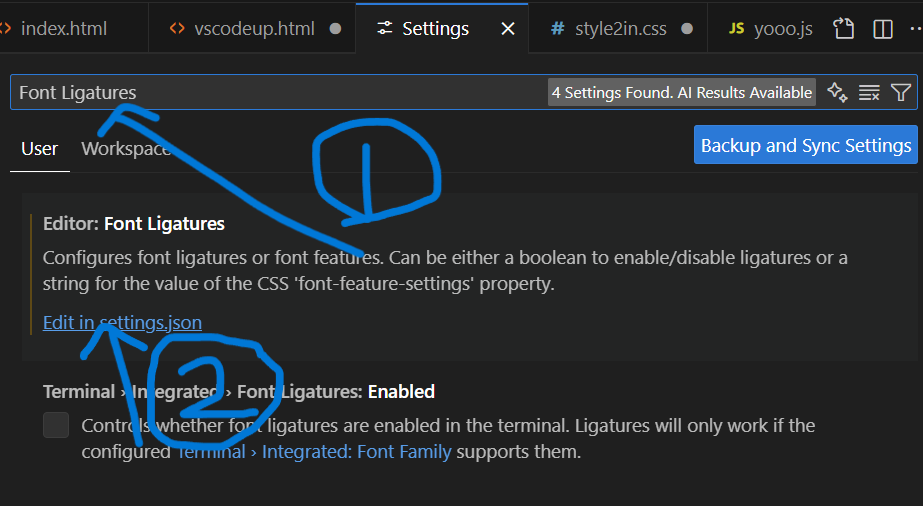
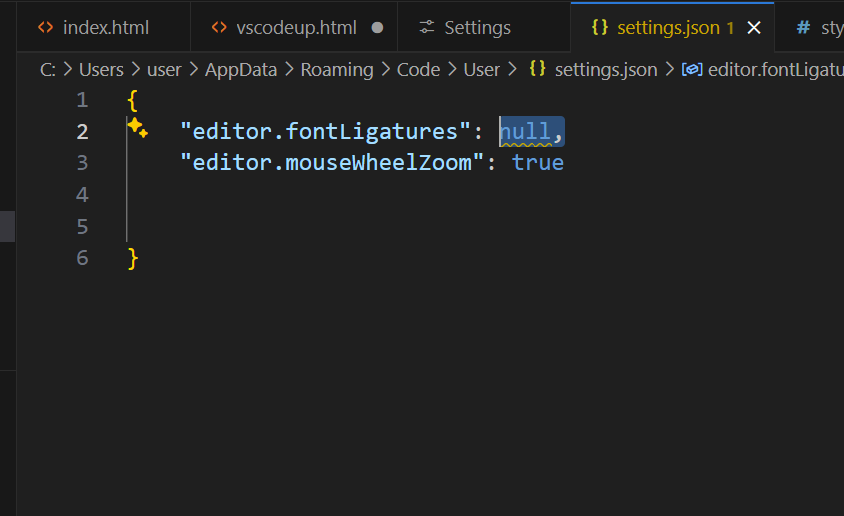
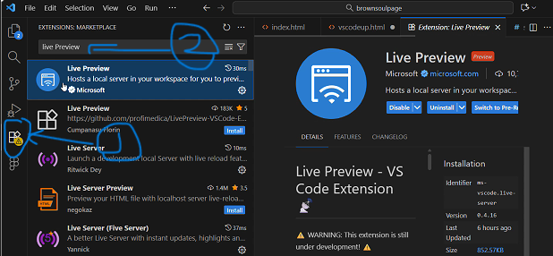
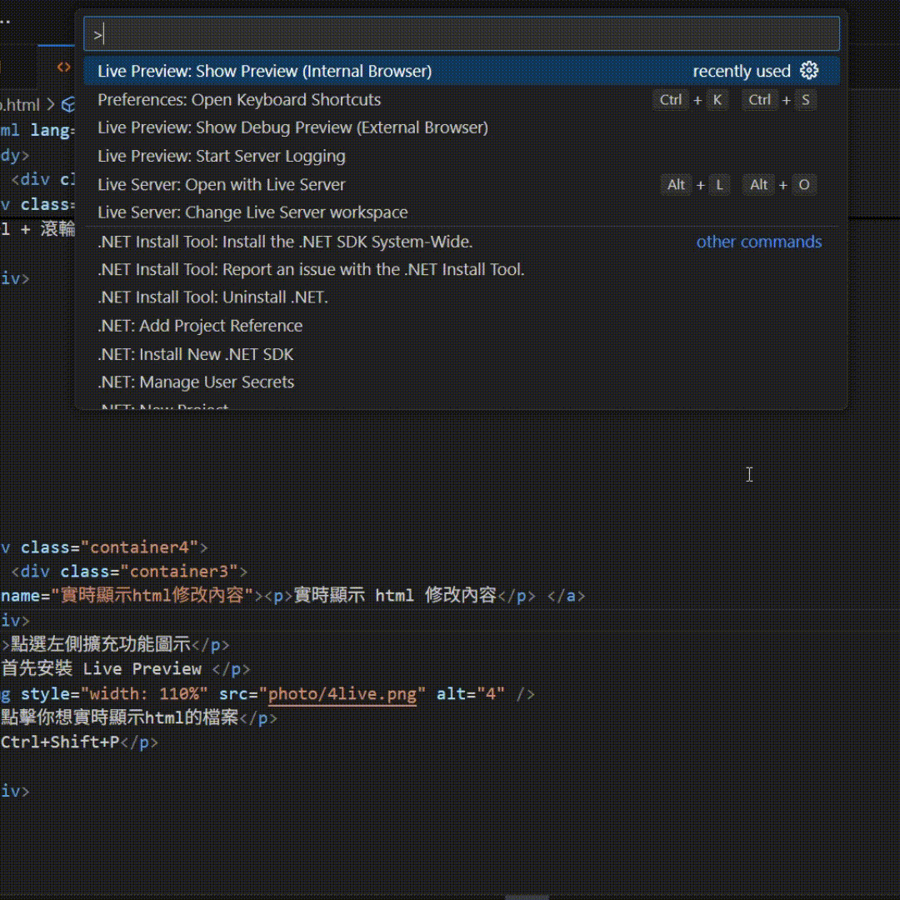

首先設置
File->Preferences->Settings
然後在搜尋列中輸入
Font Ligatures
點選第一個顯示的項目
Edit in settings.json(藍色字)
在大括號內加入以下代碼
"editor.mouseWheelZoom": true
記得加逗號
ctrl+s儲存
!完成!
完成後就可以使用滾輪放大縮小畫面
使用鼠標滾輪
Ctrl + 滾輪向上放大畫面
Ctrl + 滾輪向下縮小畫面
點選左側擴充功能圖示
首先安裝 Live Preview
點擊你想實時顯示html的檔案
Ctrl+Shift+P
輸入 Live Preview: Show Preview(Internal Browser)
!完成!